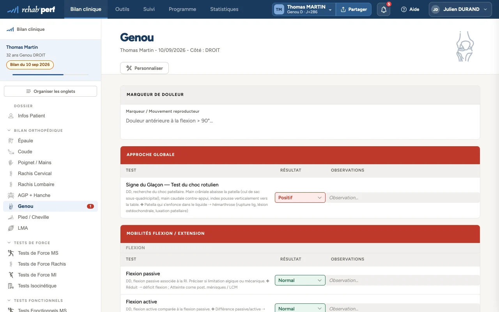

Vous testez, vous saisissez. L'application calcule les écarts, nomme les côtés correctement et garde chaque bilan fidèle à sa date.

Le bilan du genou. Les valeurs saisies alimentent le compte-rendu, le Suivi et les courbes d'évolution.
Épaule, coude, poignet, rachis, hanche, genou, pied, lésion musculaire. Chaque page porte ses tests, ses amplitudes et ses observations.
Comparer les deux amplitudes range la limitation dans l'un des quatre profils, et la fin de course affine le verdict.
Vous saisissez des mesures. Ce qui en découle n'a pas à être recompté à la main.
Tout test à deux côtés sort son indice et son écart, avec le barème appliqué seul.
Trois paliers nommés, pour les cabinets qui testent sans matériel de mesure.
Le côté atteint se résout région par région. Sans côté atteint, tout reste en gauche et droite.
Cadence, attaque du pied, contact au sol : vous observez, deux lignes décrivent sans prescrire.
Les anciens résultats restent en fond, et la marque « réévalué » dit ce qui a bougé.
Chaque mesure devient une courbe, bilan après bilan, avec le chiffre du jour en grand.
Le courrier s'écrit pendant que vous remplissez le bilan. Il ne reste qu'à l'envoyer.
Quatre espaces et un corps en trois dimensions : où en est-il, comment va son corps, que fait-il, de quoi est-il capable.
Une bibliothèque en vidéo, un builder qui se souvient, des modèles et un agenda qui planifie.
Créez votre compte gratuitement, sans carte bancaire, et testez sur un dossier réel dès aujourd'hui.
Commencer gratuitement